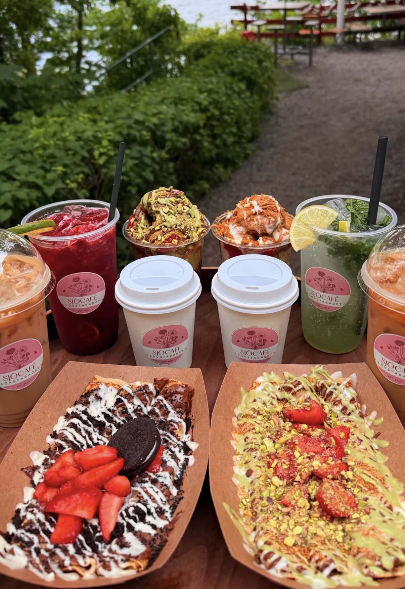
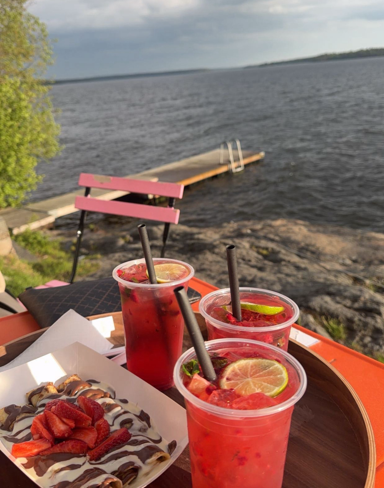
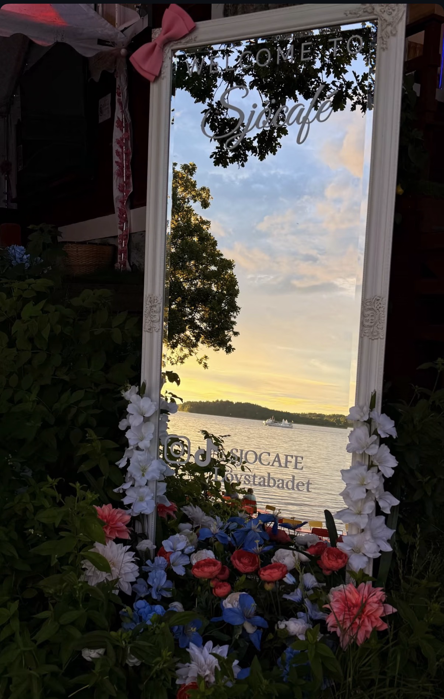

Om oss
Alldeles intill Lövstabadets natursköna omgivningar hittar du oss. Här vill vi erbjuda en avslappnad och välkomnande miljö där du kan slå dig ner för en fika, njuta av något gott att äta eller helt enkelt umgås och ta vara på stunden.
Sjöcafé Lövstabadet har funnits sedan 2017 och har sedan dess utvecklats till en mångsidig verksamhet med fokus på mat, fika, aktiviteter och upplevelser. Kombinationen av det sjönära läget och den avslappnade atmosfären gör oss till en naturlig mötesplats för både familjer, vänner och andra sällskap.
Hos oss ska det vara enkelt att trivas. Oavsett om du kommer för att ta en kaffe, äta något gott, fira en speciell dag eller bara koppla av en stund vid vattnet är du varmt välkommen till Sjöcafé Lövstabadet.
Kyrkhamnsvägen 23, 165 72 Hässelby
Vår meny
Klicka på en produkt för ingredienser och allergener.
Har du frågor om allergener? Kontakta alltid personalen innan beställning.
Mat
Trippel Toast85 kr
Ingredienser: Toastbröd, kyckling, smör, pesto och ost.
Allergener: Gluten, mjölk, cashewnötter. Kontakta personalen vid frågor om övriga allergener.
Nachos145 kr
Ingredienser: Nachochips, färs, ost, salsa, guacamole, jalapeño och majs.
Allergener: Mjölk. Kontakta personalen vid frågor om övriga allergener.
Pannkakor110 kr
Ingredienser: Pannkakor, sylt, grädde och jordgubbar.
Allergener: Gluten, mjölk, ägg. Kontakta personalen vid frågor om övriga allergener.
Kycklingwrap95 kr
Ingredienser: Kyckling, bulgurröra, hummus, feferoni, sallad och vitost.
Allergener: Ägg, mjölk, senap, sesamfrön, gluten. Kontakta personalen vid frågor om övriga allergener.
Caesarwrap95 kr
Ingredienser: Kyckling, caesardressing, ost och sallad.
Allergener: Ägg, fisk, mjölk, senap, gluten. Kontakta personalen vid frågor om övriga allergener.
Halloumiwrap95 kr
Ingredienser: Halloumi, bulgurröra, feferoni, hummus, sallad, oliver, pesto och rödlök.
Allergener: Ägg, mjölk, senap, sesamfrön, gluten. Kontakta personalen vid frågor om övriga allergener.
Pastasallad Kyckling125 kr
Ingredienser: Pasta, kyckling, sallad, dressing, majs, tomat, feferoni, rapsolja och kryddor.
Allergener: Gluten, ägg, senap. Kontakta personalen vid frågor om övriga allergener.
Grönsallad Kyckling125 kr
Ingredienser: Sallad, kyckling, morot, majs, kikärtor, dressing och tomat.
Allergener: Ägg, senap. Kontakta personalen vid frågor om övriga allergener.
Grekisk Quinoasallad125 kr
Ingredienser: Quinoa, ost, oliver, morot, persilja, sallad, tomat och dressing.
Allergener: Mjölk, sulfit. Kontakta personalen vid frågor om övriga allergener.
Grönsallad Caesar125 kr
Ingredienser: Kyckling, sallad, ost, dressing, tomat och kryddor.
Allergener: Ägg, fisk, senap, sulfit, mjölk, gluten. Kontakta personalen vid frågor om övriga allergener.
Pastasallad Räkor125 kr
Ingredienser: Pasta, räkor, sallad, majs, dressing, ägg, tomat, citron och kryddor.
Allergener: Gluten, kräftdjur, ägg. Kontakta personalen vid frågor om övriga allergener.
Kalla drinkar
Vanlig Islatte85 kr
Ingredienser: Espresso, laktosfri mjölk och is.
Allergener: Mjölk. Kontakta personalen vid frågor om övriga allergener.
Caramel Islatte85 kr
Ingredienser: Espresso, laktosfri mjölk, karamellsyrup och is.
Allergener: Mjölk. Kontakta personalen vid frågor om övriga allergener.
Pistachio Islatte85 kr
Ingredienser: Espresso, laktosfri mjölk, pistagesyrup och is.
Allergener: Mjölk. Kontakta personalen vid frågor om övriga allergener.
Tiramisu Islatte85 kr
Ingredienser: Espresso, laktosfri mjölk, tiramisusyrup och is.
Allergener: Mjölk. Kontakta personalen vid frågor om övriga allergener.
Blue Avatar85 kr
Ingredienser: Blåbärssyrup, frysta blåbär, lime, is och blåbärsdryck.
Allergener: Kontakta personalen vid frågor om allergener.
Pinki85 kr
Ingredienser: Hallonsyrup, frysta hallon, lime, is och hallondryck.
Allergener: Kontakta personalen vid frågor om allergener.
Mango Mania85 kr
Ingredienser: Mangosyrup, fryst mango, lime, is och mangodryck.
Allergener: Kontakta personalen vid frågor om allergener.
Mojito85 kr
Ingredienser: Mojitosyrup, lime, mynta, is och lemon-limedryck.
Allergener: Kontakta personalen vid frågor om allergener.
Mango Milkshake85 kr
Ingredienser: Mangosorbet och laktosfri mjölk.
Allergener: Mjölk. Kontakta personalen vid frågor om övriga allergener.
Oreo Milkshake85 kr
Ingredienser: Gräddglass, laktosfri mjölk och krossade kakor.
Allergener: Mjölk, gluten, soja. Kontakta personalen vid frågor om övriga allergener.
Jordgubb Milkshake85 kr
Ingredienser: Jordgubbsglass och laktosfri mjölk.
Allergener: Mjölk. Kontakta personalen vid frågor om övriga allergener.
Choklad Milkshake85 kr
Ingredienser: Chokladglass och laktosfri mjölk.
Allergener: Mjölk. Kontakta personalen vid frågor om övriga allergener.
Hallon Milkshake85 kr
Ingredienser: Hallonsorbet och laktosfri mjölk.
Allergener: Mjölk. Kontakta personalen vid frågor om övriga allergener.
Vanilj Milkshake85 kr
Ingredienser: Vaniljglass och laktosfri mjölk.
Allergener: Mjölk. Kontakta personalen vid frågor om övriga allergener.
Tiramisu Milkshake85 kr
Ingredienser: Tiramisuglass och laktosfri mjölk.
Allergener: Mjölk. Kontakta personalen vid frågor om övriga allergener.
Varma drinkar
Bryggkaffe39 kr
Ingredienser: Mellan rostad bryggkaffe.
Allergener: Kontakta personalen vid frågor om övriga allergener.
Bryggkaffe Med Mjölk39 kr
Ingredienser: Mellan rostad bryggkaffe med laktosfri mjölk.
Allergener: Mjölk. Kontakta personalen vid frågor om övriga allergener.
Latte39 kr
Ingredienser: Espresso, laktosfri mjölk.
Allergener: Mjölk. Kontakta personalen vid frågor om övriga allergener.
Cappucino39 kr
Ingredienser: Espresso, laktosfri mjölk.
Allergener: Mjölk. Kontakta personalen vid frågor om övriga allergener.
Svart te39 kr
Allergener: Kontakta personalen vid frågor om allergener.
Mini Pancakes
Mini Pancakes135 kr
Ingredienser: Pannkakor, jordgubbar, nutella och vit choklad.
Allergener: Gluten, mjölk, ägg, hasselnötter, soja. Kontakta personalen vid frågor om övriga allergener.
Dubai Mini Pancakes145 kr
Ingredienser: Pannkakor, jordgubbar, kadayif, nutella, pistagesås och pistagenötter.
Allergener: Gluten, mjölk, ägg, hasselnötter, pistagenötter, soja. Kontakta personalen vid frågor om övriga allergener.
Oreo Mini Pancakes145 kr
Ingredienser: Pannkakor, jordgubbar, krossade oreo, nutella och vit choklad.
Allergener: Gluten, mjölk, ägg, hasselnötter, soja. Kontakta personalen vid frågor om övriga allergener.
Biscoff Mini Pancakes145 kr
Ingredienser: Pannkakor, jordgubbar, krossade biscoff, biscoff sås och vit choklad.
Allergener: Gluten, mjölk, ägg, soja. Kontakta personalen vid frågor om övriga allergener.
Tillägg: Vaniljglass 25 kr, banan 25 kr.
Cups
Dubai Cup135 kr
Ingredienser: Jordgubbar, kadayif, nutella, pistagesås, pistagenötter och pistageglass.
Allergener: Gluten, mjölk, hasselnötter, pistagenötter, soja. Kontakta personalen vid frågor om övriga allergener.
Biscoff Cup135 kr
Ingredienser: Jordgubbar, krossade biscoff, biscoff sås, vit choklad och vaniljglass.
Allergener: Gluten, mjölk, soja. Kontakta personalen vid frågor om övriga allergener.
Kinder Cup135 kr
Ingredienser: Jordgubbar, kinder bueno, nutella, vit choklad och vaniljglass.
Allergener: Gluten, mjölk, hasselnötter, soja. Kontakta personalen vid frågor om övriga allergener.
Oreo Cup135 kr
Ingredienser: Jordgubbar, krossade orep, nutella, vit choklad och vaniljglass.
Allergener: Gluten, mjölk, hasselnötter, soja. Kontakta personalen vid frågor om övriga allergener.
Snickers Cup135 kr
Ingredienser: Jordgubbar, snickers choklad, nutella, vit choklad och vaniljglass.
Allergener: Jordnötter, hasselnötter, mjölk, soja, ägg. Kontakta personalen vid frågor om övriga allergener.
Twix Cup135 kr
Ingredienser: Jordgubbar, twix choklad, nutella, vit choklad och vaniljglass.
Allergener: Gluten, mjölk, hasselnötter, soja. Kontakta personalen vid frågor om övriga allergener.
Glass
JordgubbFrån 45 kr
Ingredienser: Jordgubbsglass.
Allergener: Mjölk. Kontakta personalen vid frågor om övriga allergener.
ChokladFrån 45 kr
Ingredienser: Chokladglass.
Allergener: Mjölk. Kontakta personalen vid frågor om övriga allergener.
VaniljFrån 45 kr
Ingredienser: Vaniljglass.
Allergener: Mjölk. Kontakta personalen vid frågor om övriga allergener.
PistageFrån 45 kr
Ingredienser: Pistageglass.
Allergener: Mjölk. Kontakta personalen vid frågor om nötter.
MangosorbetFrån 45 kr
Ingredienser: Mangosorbet.
Allergener: Kontakta personalen vid frågor om allergener.
HallonsorbetFrån 45 kr
Ingredienser: Hallonsorbet.
Allergener: Kontakta personalen vid frågor om allergener.
OreoFrån 45 kr
Ingredienser: Kakglass.
Allergener: Mjölk, gluten, soja. Kontakta personalen vid frågor om övriga allergener.
TiramisuFrån 45 kr
Ingredienser: Tiramisuglass.
Allergener: Mjölk. Kontakta personalen vid frågor om allergener.
Pris: 1 kula 45 kr / 2 kulor 60 kr / 3 kulor 70 kr.
Summer Menu
Sour Cup85 kr
Ingredienser: Granatäpple, kiwi och lime.
Allergener: Kontakta personalen vid frågor om allergener.
Fresh Cup95 kr
Ingredienser: Jordgubbar, vattenmelon, honungsmelon, ananas och vindruvor.
Allergener: Kontakta personalen vid frågor om allergener.
Strawberry Cup85 kr
Ingredienser: Jordgubbar.
Allergener: Kontakta personalen vid frågor om allergener.
Pistagepärlan125 kr
Ingredienser: Jordgubbar, hasselnötskräm, pistagenötter och vaniljglass.
Allergener: Mjölk, hasselnötter, pistagenötter, soja. Kontakta personalen vid frågor om övriga allergener.
Pistachio Dubai Cup125 kr
Ingredienser: Vaniljglass, kadayif, pistagesås och pistagenötter.
Allergener: Mjölk, gluten, pistagenötter. Kontakta personalen vid frågor om övriga allergener.
Banana Split110 kr
Ingredienser: Banan, kulglass och toppings enligt servering.
Allergener: Mjölk. Ytterligare allergener kan förekomma beroende på glass och toppings.
Galleri
En glimt av Sjöcafé Lövstabadet, maten och våra vackra omgivningar.




Kontakta oss
Följ Sjöcafé Lövstabadet på sociala medier eller kontakta oss via mejl.